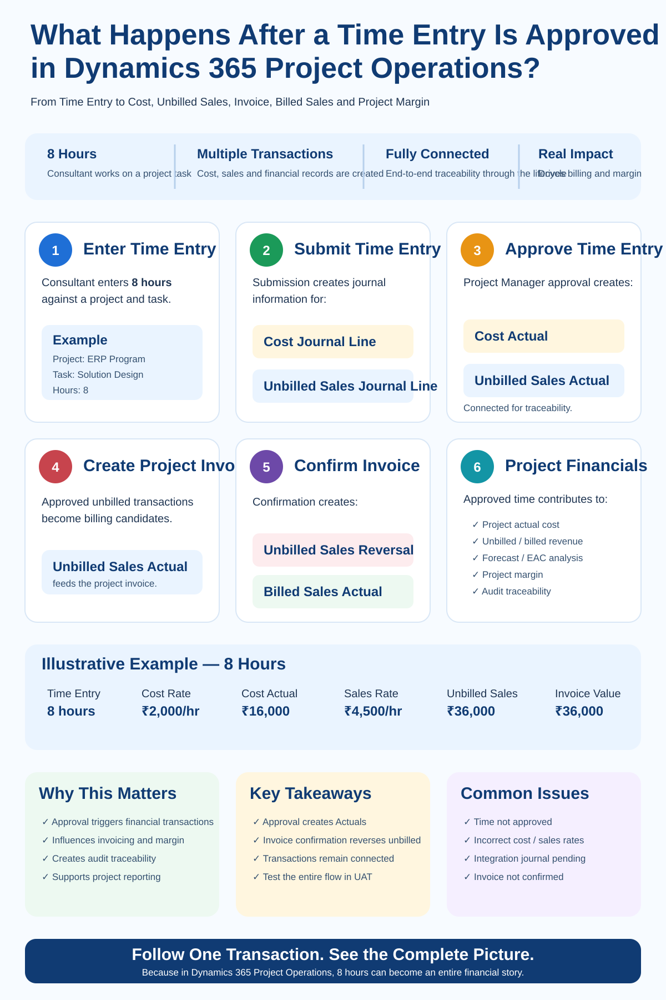

A consultant enters 8 hours against a project task in Dynamics 365 Project Operations. The Project Manager reviews the entry and clicks Approve. From an end-user perspective, the process may appear complete because the status now shows Approved. But from a Project Operations perspective, approval is only one stage in a much larger financial transaction lifecycle.
Behind that approval, the system can create and connect records that eventually influence project actual cost, unbilled sales, customer invoicing, billed sales, financial integration, profitability reporting and audit traceability.
1. The process starts with the Time Entry
A project resource records time against a project. Depending on the implementation, the user may select the project, project task, date, hours, role, bookable resource and description.
Resource: Senior Functional Consultant
Project: ERP Transformation Program
Task: Solution Design
Time: 8 Hours
At this stage, the transaction primarily represents work performed by the resource. It has not yet completed its financial lifecycle.
2. What happens when the Time Entry is submitted?
This is where the transaction journey starts becoming financially meaningful. For the typical Project Operations time-entry lifecycle, submission creates journal information representing two different perspectives of the same work:
- Cost — what it costs the organization to deliver the work.
- Unbilled Sales — the sales value of the work that has been performed but is not yet invoiced.
Microsoft Learn — Connecting Actuals
Cost perspective
The cost-side transaction represents the internal cost associated with the resource effort. Depending on configuration, the cost rate can be influenced by resource, role, organizational unit, transaction date, currency and the applicable cost price list.
Sales perspective
The unbilled-sales side represents the potential billable value associated with the work. The two values do not need to be equal.
Unbilled Sales asks: What sales value is associated with this work before customer invoicing?
3. Submission is not the same as approval
The resource has submitted the time, but the Project Manager or designated approver still needs to validate it. The approval process therefore acts as an important control point.
- Correct project and project task
- Reasonable number of hours
- Correct resource and role
- Correct commercial context
- Correct period
- Whether the work should be billable
If incorrect transactions are approved, those errors can move downstream into Actuals, billing, reporting and reconciliation.
4. What happens when the Project Manager approves the time?
Approval is the key transition. Microsoft documents that approval of project-related time creates Actuals. In a typical Time and Material scenario, the approved transaction can result in a Cost Actual and an Unbilled Sales Actual. These transactions are related through Project Operations transaction relationships such as Transaction Connections.
Microsoft Learn — Approvals overview
5. What is a Cost Actual?
The Cost Actual represents the approved cost of delivering the work.
8 hours × ₹2,000 cost rate = ₹16,000 Cost Actual
This value can contribute to project actual cost, actual-versus-budget analysis, forecasting, financial integration and profitability reporting.
Microsoft Learn — Actuals overview
6. What is an Unbilled Sales Actual?
The Unbilled Sales Actual represents approved billable value that has not yet been invoiced.
8 hours × ₹4,500 sales rate = ₹36,000 Unbilled Sales
The customer has not yet been invoiced, but Project Operations now has approved billable value associated with the project work.
Potential Billable Value: ₹36,000
7. Why are Cost and Unbilled Sales transactions connected?
Project Operations maintains relationships between related transactions so that teams can trace the financial lifecycle. If Finance asks, “Where did this ₹36,000 unbilled amount come from?”, a well-controlled implementation should allow the team to trace it back through its originating project transaction rather than relying on an offline spreadsheet.
8. Transaction Origin — where did the financial record come from?
Transaction Origin helps identify where a transaction came from as it progresses through the project lifecycle.
↓
Transaction Processing
↓
Actuals
↓
Invoice Line Transaction
↓
Billed Sales Actual
This changes the troubleshooting question from “Why is my project margin wrong?” to “Which source transaction created this Actual, and what happened to it afterwards?”
9. What happens when the Project Invoice is created?
For a Time and Material billing scenario, approved unbilled transactions can become candidates for customer invoicing. The Unbilled Sales Actual participates in the creation of the project invoice and the related invoice-line transaction.
10. What happens when the invoice is confirmed?
Invoice confirmation changes the financial state of the transaction. Microsoft documents a lifecycle in which confirmation creates an Unbilled Sales Reversal and a Billed Sales Actual.
After confirmation: Unbilled Sales reversed → Billed Sales created
11. The complete transaction flow
↓
Submit Time Entry
↓
Cost + Unbilled Sales transaction processing
↓
Project Manager Approval
↓
Cost Actual + Unbilled Sales Actual
↓
Project Invoice Creation
↓
Invoice Confirmation
↓
Unbilled Sales Reversal + Billed Sales Actual
↓
Project Financial Reporting
↓
Project Margin Analysis
This is why validating only the approval status is not enough.
12. What happens in Project Operations integrated with Dynamics 365 Finance?
Organizations running Project Operations Integrated with ERP have another layer to validate. Project transactions created in Dataverse can participate in integration with Dynamics 365 Finance through Project Operations accounting and integration processes.
A transaction being correct in Dataverse does not automatically prove that every downstream Finance process has completed successfully.
Microsoft Learn — Project Operations integration journal
13. Why can Project Margin still be wrong?
Suppose a dashboard shows revenue of ₹10,00,000 and cost of ₹7,00,000. The displayed margin may look healthy. But what if some project costs or billing transactions have not reached the expected stage?
- Time entry still pending approval
- Expense not approved
- Subcontractor cost not yet posted to the project
- Incorrect cost rate or sales rate
- Wrong contract line
- Non-billable transaction
- Integration journal pending or failed
- Invoice still in draft
- Correction or reversal incomplete
14. A better UAT approach
A common UAT script stops at Enter Time → Submit → Approve → Status = Approved. That proves the workflow works. It does not prove the project financial lifecycle works.
Take one simple transaction and validate the complete path:
- Time Entry: resource, project, task, date and quantity
- Submission: expected cost and sales-side transaction behaviour
- Approval: Cost Actual and Unbilled Sales Actual where applicable
- Pricing: cost price, sales price and currency
- Traceability: Transaction Origin and Transaction Connections
- Billing: confirm the appropriate unbilled transaction is invoiced
- Invoice Confirmation: validate unbilled reversal and billed sales
- Finance Integration: validate downstream processing
- Margin: only then validate profitability
15. Common troubleshooting questions
- Was the time entry actually approved?
- Were the expected Actuals created?
- Are cost and sales rates correct?
- Is the transaction billable?
- Is the correct contract line involved?
- Can the Actual be traced to its source?
- Has the transaction reached invoicing?
- Has Finance integration completed?
- Were corrections or reversals created?
16. Time and Material vs. Fixed Price
The exact financial lifecycle depends on project and contract configuration. This article primarily illustrates the typical Time and Material lifecycle because approved time can progress from unbilled sales toward customer invoicing. Fixed-price engagements have different billing and revenue-recognition behaviour.
17. Why this matters for Project Managers
Project Managers do not need to become accountants, but they should understand what their approvals can trigger. The question should not only be “Are these eight hours correct?” It should also be “Are these eight hours charged to the correct project, task and commercial context?”
18. Why this matters for Consultants
Strong Project Operations consulting is not only knowing where buttons are located. It is understanding what record gets created, what creates it, what happens next, what reverses or replaces it, and where the value finally appears financially.
19. Why this matters for Solution Architects
Architects should consider this lifecycle while designing project accounting, Dataverse and Finance integration, custom reports, data migration, reconciliation, interfaces, extensions, security and audit controls. A report can be technically correct and still financially misleading if it ignores the transaction lifecycle.
20. My implementation takeaway
↓
Where are the cost and sales-side transactions?
↓
Where is the Cost Actual?
↓
Where is the Unbilled Sales Actual?
↓
How are the transactions connected?
↓
Which invoice picked it up?
↓
Where is the Unbilled Sales Reversal?
↓
Where is the Billed Sales Actual?
↓
Did integration complete?
↓
What does the project margin show now?
If your implementation team can answer every one of those questions, you have much stronger control over the solution. If the team cannot trace the transaction, a green UAT status may provide false confidence.
Final thought
Project Operations implementations should be tested from both perspectives: operational process and financial outcome.